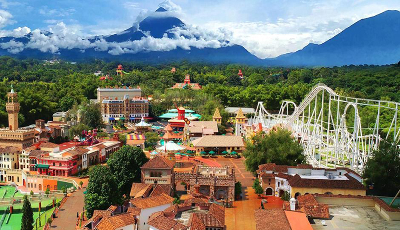
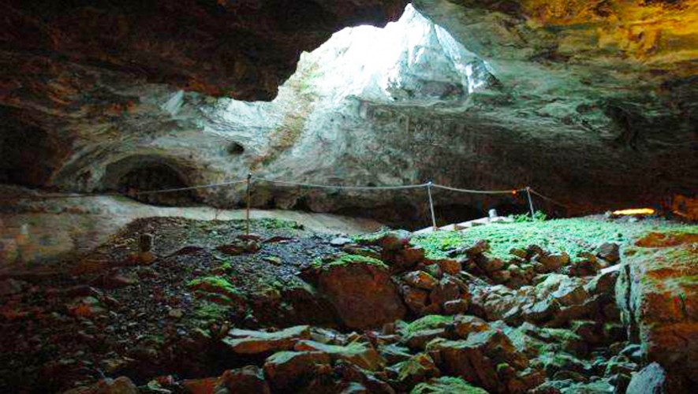
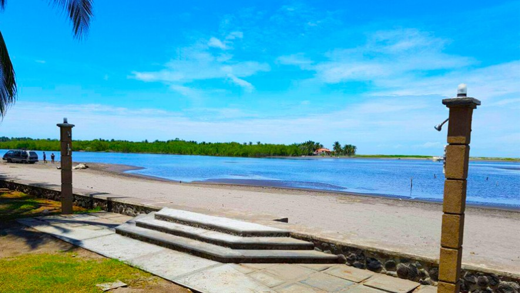
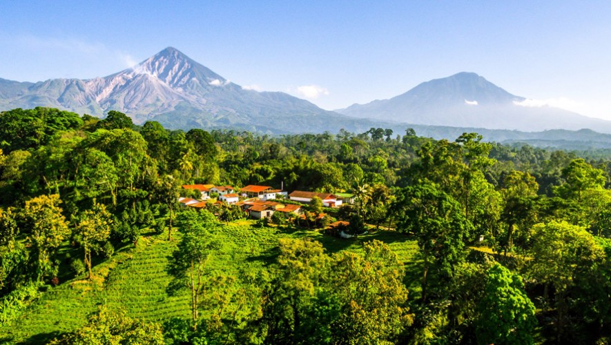
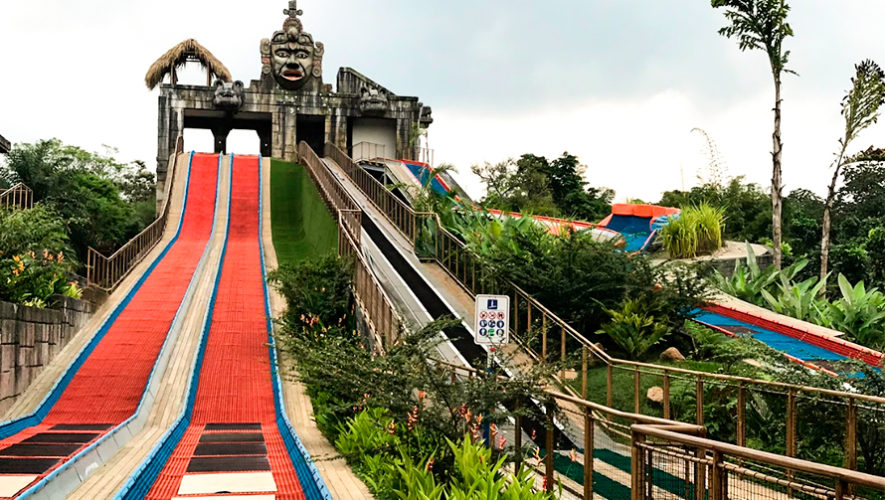

es un departamento y municipio en la costa sur de Guatemala, conocido por su clima cálido, agricultura próspera, y
atractivos turísticos. Es un importante centro agrícola e industrial, con producción de café, caña de azúcar, granos,
ganado y miel, además de contar con diversas industrias. Su riqueza natural, incluyendo playas y sitios arqueológicos,
lo convierte en un destino atractivo para el turismo. El origen del nombre proviene etimológicamente de dos voces: retal, que en idioma quiché se interpreta como “señal”; y huleu, que significa “hoyo de tierra”. Por esta razón, puede definirse como “señal de tierra”.
Retalhuleu se encuentra en la región suroccidental de Guatemala, a unos 190 km de la Ciudad de Guatemala.
1 / 5

Xetulul
Este es un parque muy divertido, lleno de bellezas culturales de todas partes del mundo. Puedes observar distintas plazas que van cambiando su temática respecto al país que representa, desde comida hasta juegos mecánicos, Xetulul es una opción perfecta para divertirte y conocer del mundo.
2 / 5

Cuevas el Encanto
Esta es una cueva que se conoce como el Encanto por los pobladores locales, es un sitio en donde se han descubierto vestigios arqueológicos de los mayas del Preclásico y Clásico. Ubicado Entre los límites del Asintal y Nuevo San Carlos, Rethalhuelu, Guatemala.
3 / 5

Playa de Tulate
Lugar para disfrutar de unas buenas vacaciones, el sol y el clima hacen la combinación perfecta para disfrutar en las aguas de estas playas. Ubicado a 228 kilómetros de la ciudad capital, las playas de Tulate cuentan con una gran diversidad de flora y fauna.
4 / 5

Reserva Patrocinio
Cuenta con actividades diferentes, al lado de la naturaleza podrás disfrutar de un día divertido con una vista espectacular. También puedes lanzarte del canopy, acampar, pasear en motocicleta, caminar por los senderos y observar el volcán Santiaguito desde una torre de observación.
5 / 5

Xejuyup
Xejuyup se enfoca en la aventura al aire libre y el contacto con la naturaleza. Se trata de un parque temático enfocado que ofrece tirolesas, lagunas, puentes colgantes y senderos entre vegetación abundante. También hay áreas de descanso, zonas con animales y un ambiente más tranquilo.
❮
❯